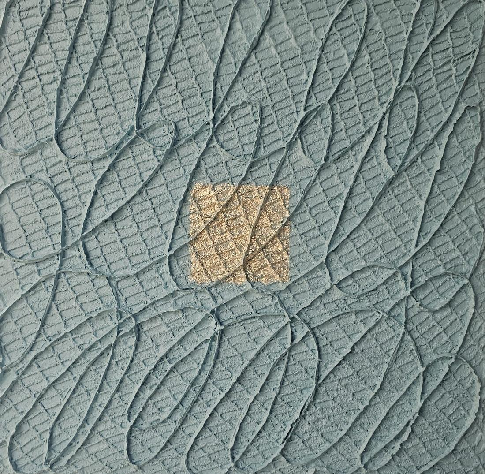

DIGNITY 2663#128
캔버스에 혼합재료 (한지, 24K 금박, 천연 옻칠, 진주)
물결처럼 굽이치는 청록의 결 한가운데 은은한 금박 사각형이 놓여 있습니다. 가까이에서 보면 사각형 안에도 바탕의 결이 그대로 이어집니다.
연작 · DIGNITY
반복된 붓질로 쌓인 깊은 질감은 삶의 시련과 시간을, 그 안에서 빛나는 사각형은 인간의 고유한 존엄을 상징합니다.
작품가와 소장 가능 여부, 액자 · 운송 · 공간에 맞는 크기는 문의 시 안내해 드립니다.